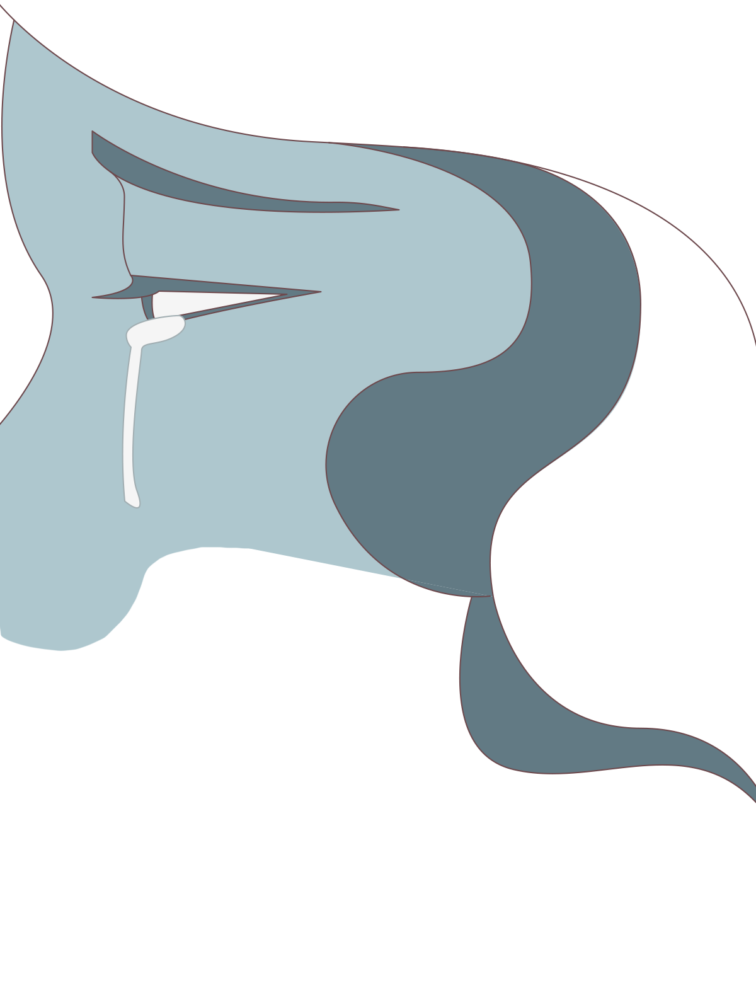
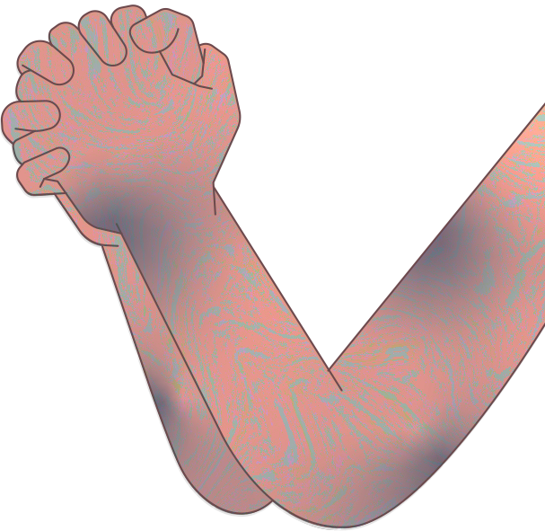
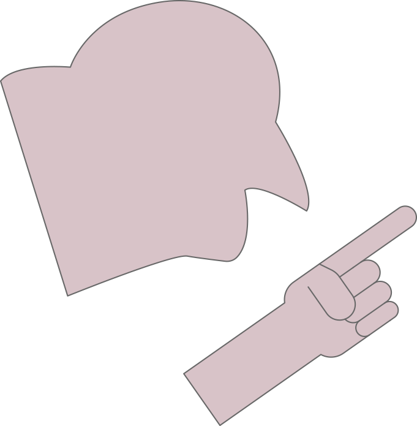
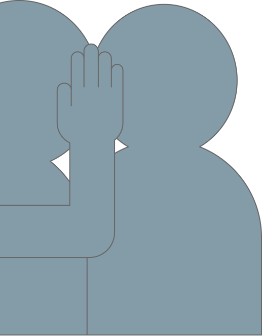
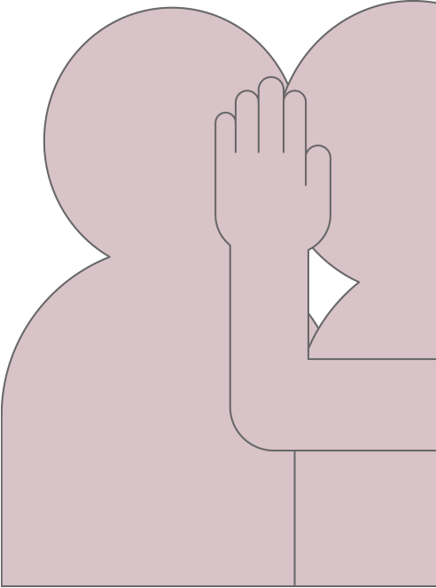
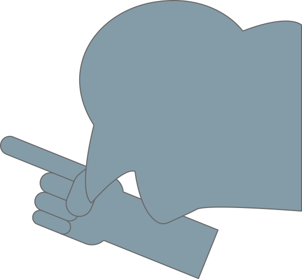
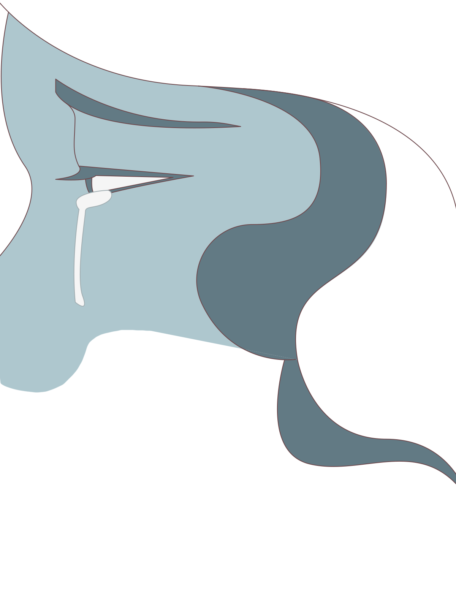
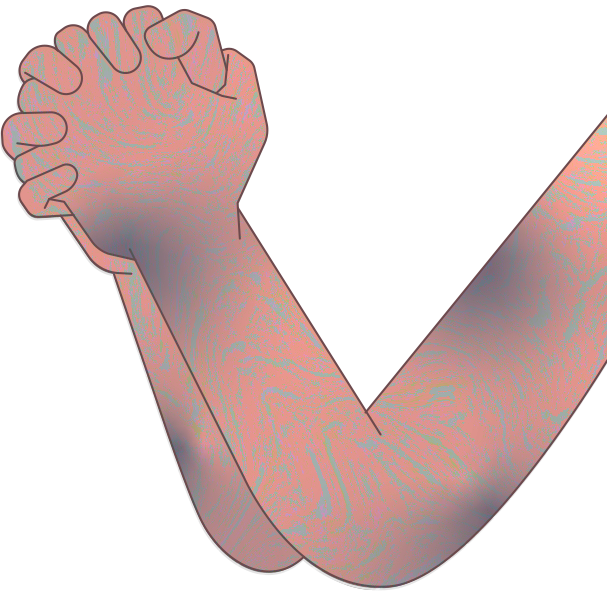
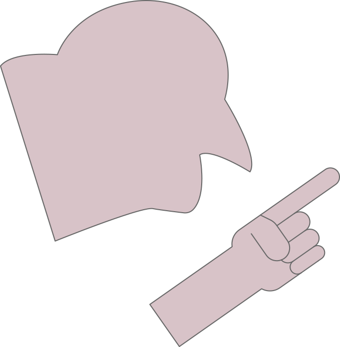
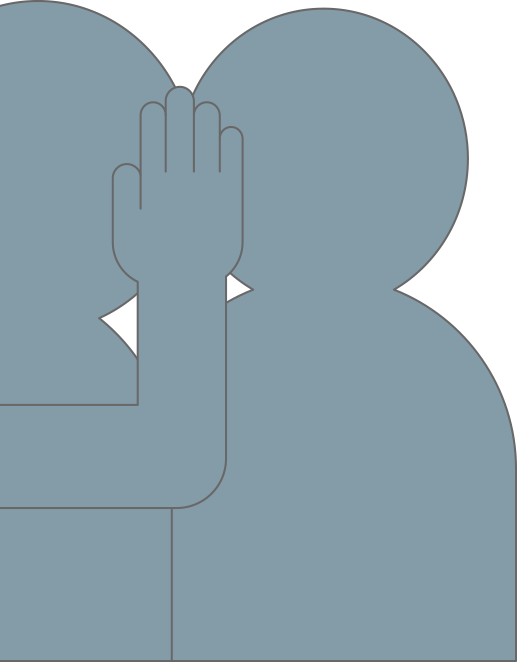
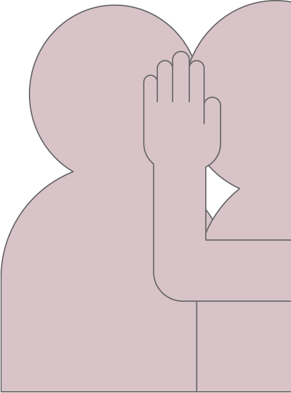
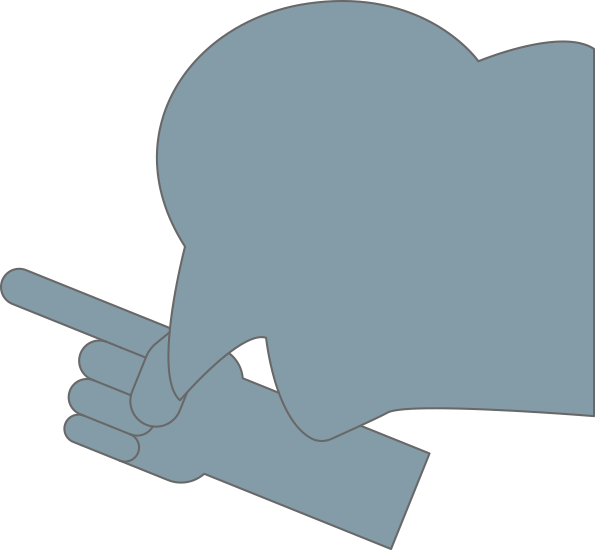


내가 기억할 수 있는 아주 어릴 때부터
아빠는 술만 먹으면 엄마를 때렸다.
엄마는 매일 눈물을 흘렸고,
결국 내가 7살 때 집을 나갔다.
엄마가 나가자, 아빠는 나에게 술 심부름을 시켰다.
슈퍼 주인이 술 팔기를 거절할 때면
멍투성이인 팔을 보여주며
돈은 줄테니 제발 팔아달라며 구걸했다.
동네 아주머니들은 날 보며 불쌍하다고 수근댔다.
하지만 학교에서 같이 말 한 번 섞었던 날에는.
다시는 자기 얘와 이야기 하지 말라며 무섭도록 몰아붙였다
사춘기가 온 13살 때에는 결국 못 참겠다며 소리를 질렀다.
내 목소리가 화를 더욱 돋우었는지,
그날에는 왼쪽 고막이 터졌다.
….라는 이야기 어때?
예전엔 가벼운 갈등과 고통의 서사가 있어야
이야기가 입체적 이라길래 조금만 넣었는데,
요즘은 자극적이지 않으면 사람들이 안읽어주더라고.
결말? 결말이야 아무렇게나 써도 돼.
해피엔딩이면 ‘역시 권선징악!’, ‘와 사이다!’이고,
배드엔딩이면 ‘현실적이라서 더 슬프네요.’라고 하는 걸.